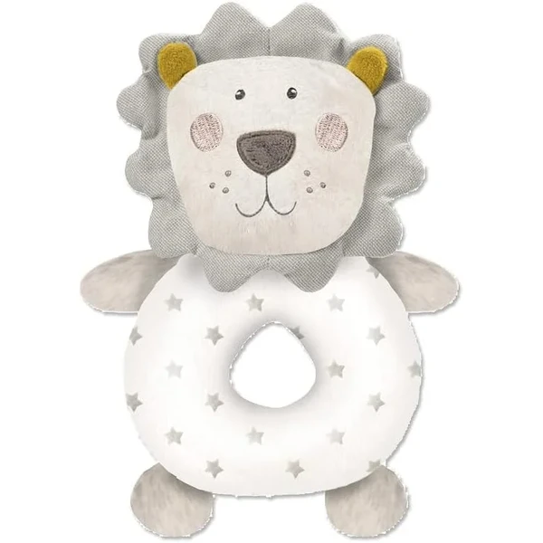
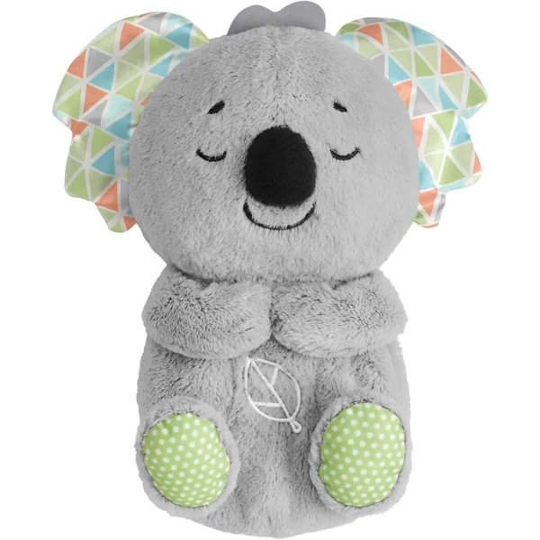
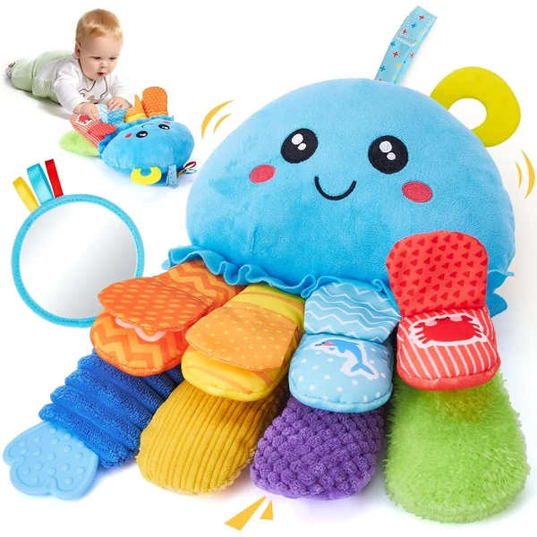
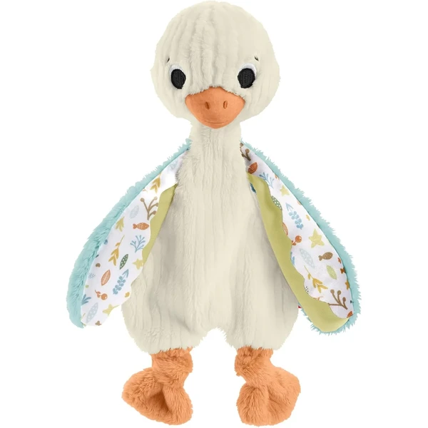
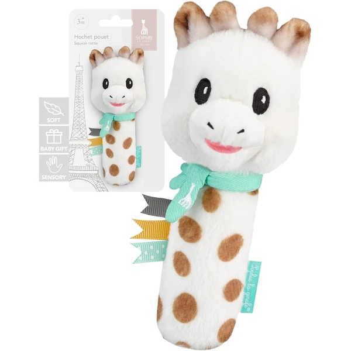
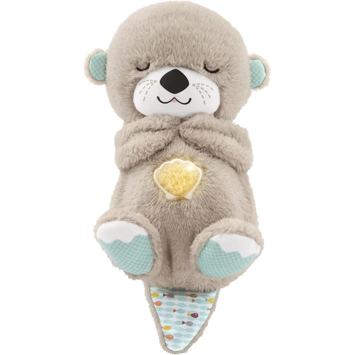

Peluche sonajero León
Un sonajero de peluche con forma de león y un cascabel en su interior. Su tamaño y textura lo hacen fácil de sujetar para las manos más pequeñas desde los primeros meses.
⭐ ¿Por qué nos gusta?
- ✔ Textura suave y agradable al tacto.
- ✔ Fácil de agarrar para manos pequeñas.
- ✔ Sonido suave que estimula el oído.
💬 Lo que más destacan las familias
Muchos padres coinciden en que su tamaño lo hace perfecto para las primeras semanas, cuando el bebé todavía no controla bien las manos. El sonido suave del cascabel también gusta porque no sobresalta ni resulta estridente.
Ver en Amazon

Koala musical Hora de Dormir Fisher-Price
Un peluche de koala con música, luces suaves y un movimiento rítmico en la barriga que imita la respiración. Pensado para acompañar el momento de dormir y ayudar al bebé a relajarse en la cuna.
⭐ ¿Por qué nos gusta?
- ✔ Movimiento rítmico que imita la respiración.
- ✔ Varias opciones de música, luz y duración.
- ✔ Peluche extra suave y lavable.
💬 Lo que más destacan las familias
Una de las cosas más comentadas es que el movimiento que imita la respiración parece ayudar de verdad a que el bebé se relaje antes de dormir. También se valora tener varias opciones de música y luz para adaptarlas a lo que mejor funcione cada noche.
Ver en Amazon

Pulpo de peluche interactivo hahaland
Un pulpo de peluche multicolor con sonajero, mordedor y superficies con texturas y crujidos en los tentáculos. Incluye una correa de velcro para engancharlo al cochecito, la cuna o la silla del coche.
⭐ ¿Por qué nos gusta?
- ✔ Combina sonajero, mordedor y texturas en un solo peluche.
- ✔ Costuras reforzadas para mayor durabilidad.
- ✔ Correa de velcro para llevarlo a cualquier parte.
💬 Lo que más destacan las familias
Los compradores valoran especialmente que combine tantos estímulos en un mismo peluche, porque el bebé siempre encuentra un tentáculo distinto que explorar. La correa también se agradece, porque evita que se caiga al suelo constantemente.
Ver en Amazon

Ganso sonajero Sensimals Fisher-Price
Un peluche de ganso suave con alas de distintas texturas y un sonajero en su interior. Estimula el tacto y el oído mientras ofrece la sensación de compañía de un peluche pequeño y fácil de llevar.
⭐ ¿Por qué nos gusta?
- ✔ Texturas variadas en las alas.
- ✔ Sonajero integrado que estimula el oído.
- ✔ Tamaño compacto, fácil de llevar.
💬 Lo que más destacan las familias
Entre los comentarios más habituales aparece lo bien que encaja en manos pequeñas, algo que lo convierte en uno de los primeros peluches que el bebé sujeta solo. Las alas con texturas distintas también se llevan buenas críticas por mantener su curiosidad.
Ver en Amazon

Peluche sonajero Sophie la girafe
Un sonajero de peluche de la clásica Sophie la girafe, con efecto chirriante, cascabeles y texturas variadas. Pensado también para aliviar las encías durante la dentición a partir de los 7 meses.
⭐ ¿Por qué nos gusta?
- ✔ Combina sonido chirriante y cascabeles.
- ✔ Texturas variadas para explorar con manos y boca.
- ✔ Zonas flexibles aptas para morder.
💬 Lo que más destacan las familias
Quienes lo han probado destacan que el sonido chirriante engancha al bebé casi al instante, más que otros sonajeros con cascabel normal. Las zonas flexibles para morder también gustan, porque acompañan bien cuando empiezan a salir los primeros dientes.
Ver en Amazon

Nutria musical Hora de Dormir Fisher-Price
Un peluche de nutria con música, luces suaves y un movimiento que imita la respiración, pensado para calmar al bebé antes de dormir. Permite personalizar la duración, el volumen y las luces.
⭐ ¿Por qué nos gusta?
- ✔ Movimiento que imita la respiración para calmar al bebé.
- ✔ Música y luces personalizables.
- ✔ Tejido muy suave y lavable a máquina.
💬 Lo que más destacan las familias
Un detalle que aparece una y otra vez es lo bien que funciona el movimiento de respiración para calmar al bebé antes de dormir, igual que en otros modelos de la misma gama. También se valora poder ajustar la duración y el volumen según lo que mejor funcione cada noche.
Ver en Amazon